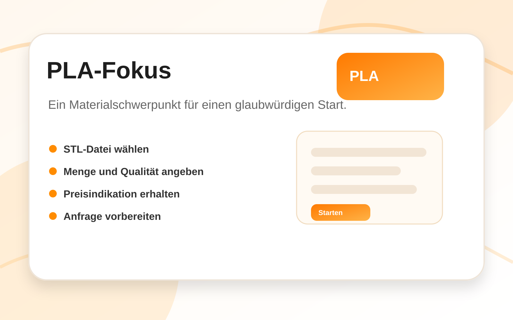

PLA als klarer Startfokus.
Große Plattformen bieten viele Materialien. Musterteil startet bewusst fokussiert mit PLA.

Warum PLA?
PLA ist verständlich, gut für Modelle und Prototypen geeignet und macht den Startprozess überschaubar.
- geeignet für Modelle und Anschauungsteile
- passend für studentische Projekte
- klare Kommunikation im Angebot
- gut für kleine Aufträge